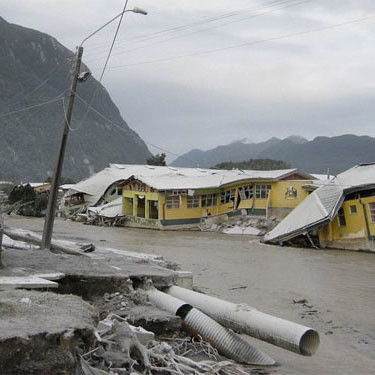

La localidad
Chaitén es una de las cuatro comunas en las que se divide la provincia de Palena, ubicada en el extremo sureste de la región chilena de Los Lagos. Las comunas vecinas de Chaitén, que son parte de la misma provincia, son: Hualaihué (al norte), Futaleufú (al este) y Palena (también al este, y al sur de Futaleufú).
El volcán
Este macizo sin glaciares, pequeño si es comparado con el volcán Machimahuida y los cuernos del Paine, fue considerado por mucho tiempo un cerro. Así lo confirman viejos mapas cartográficos de la zona y relatos de los lugareños. Pero en 1994, el vulcanólogo Óscar González-Ferrán, en su libro "Atlas de los volcanes de Chile", lo incluyó como tal, bautizándolo con el nombre de la tranquila comuna cuyo centro se encuentra a 10 kilómetros de distancia de un cráter inactivo por más de 9 milenios.
La erupción
En la noche del 30 de abril de 2008, la tranquilidad en Chaitén se vio interrumpida con el inicio de una oleada de temblores que tenían por epicentro a aquel volcán que, hasta 1994, se consideró un cerro. Después de un par de días, tal oleada de temblores pudo comprenderse como un aviso.
-

En la madrugada del día 2 de mayo de 2008, el volcán Chaitén inició la actividad eruptiva, siendo la mayor de su tipo registrada desde el año 1912 en Alaska.
-

En la mañana del mismo día se produce la evacuación por mar de mujeres, niños y personas mayores, con destino a Puerto Montt, Castro y Quellón.
-

Durante el día continúa la evacuación por vía terrestre, con destino a las comunas vecinas de Futaleufú y Palena.
-
En la noche del mismo día, 2 de mayo, quedan menos de 1.000 personas en Chaitén. Su evacuación se reanuda al día siguiente.
-
La nube de la erupción del Chaitén llega a Futaleufú el día 4 de mayo. Desde tal comuna, la población es evacuada, vía Argentina, hacia Osorno.
-
El día 6 de mayo, Chaitén es abandonada por personal técnico y militar, quienes instalan su base a la isla Los Desertores. Futaleufú también es abandonada.
-

El día 10 de mayo, producto de las lluvias, la acumulación de cenizas y sedimentos, y el deshielo del Michimahuida, se desborda el río Blanco.
-

Mientras tanto, la columna de gases y cenizas expulsada por el volcán, alcanzó más de 25 kilómetros de altura, extendiéndose a la costa atlántica.
La erupción continuó por 3 años, perdiendo fuerza mes a mes, hasta extinguirse en Mayo del 2011.
El volcán Chaitén no expulsó lava. Su erupción se caracterizó por una continua expulsión de flujo piroclástico (también llamada nube ardiente o corriente de densidad piroclástica), la que se compone por gases y material sólido (ceniza y rocas de diverso tamaño) capaces de fluir a grandes temperaturas y velocidades.
Según la NASA, la columna vertical de flujo piroclástico alcanzó una altura de 25 kilómetros. Luego, las corrientes de aire llevaron este flujo al este, hasta llegar al Océano Atlántico. La ceniza fue precipitándose en el camino, hasta acumularse de 20 a 10 centímetros en la zona que se encuentra entre el volcán Chaitén y Futaleufú.
Río Blanco
El calor del flujo piroclástico expulsado por el volcán Chaitén provocó el deshielo de las cimas de los macizos cercanos. Al mismo tiempo, precipitaban agua y cenizas sobre el caudal del Río Blanco que ya recibía los deshielos. La mezcla de estos factores, terminaron provocando la salida del río de su cauce natural. Salida que destruyó gran parte del centro de la comuna de Chaitén, y creó una división entre sur y norte que persiste hasta el día de hoy.

El cruce del Río Blanco desbordado por el centro de la comuna destruyó buena parte de las casas abandonadas que, bajo las cenizas, seguían en pie.